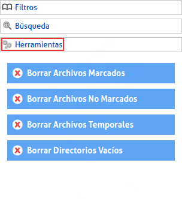
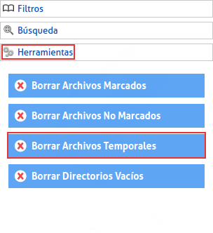

|
Esta opción es para borrar los archivos temporales que crea el sistema que se encontraban dentro del directorio de búsqueda y para hacerlo: Debemos dirigirnos al menú de la izquierda, y en la opción "Herramientas", debemos asegurarnos de haber realizado una búsqueda sino los campos saldrán bloqueados. |
|  |
|
Si ya hemos realizado una búsqueda, solo queda dar clic en el tercer botón, "Borrar Archivos Temporales" |
|  |
|
Podrá tener un mejor manejo de éstos mediante el panel que se despliega desde la barra inferior. |